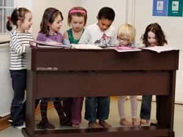

< < < Back
Sweden Continues To Fund Bizarre And Inappropriate Sex Education For Young Children – Return Of Kings
Sex is big business in Sweden. In Sweden, big business means government funding and political influence. Two organizations stand out in power, influence, and wealth, and are responsible for corrupting countless children and pushing a bizarre sexual agenda: RFSU and RFSL. This article will give a brief introduction the history and current activities of these two institutions.
Sexual “Enlightenment”
RFSU, The Swedish Association for Sexuality Education, was founded in 1933 by Elise Ottesen-Jensen, also known as Ottar. Ottesen-Jensen was a Norwegian syndicalist who is best known to an international audience for being one of the co-founders of International Planned Parenthood Federation.
Today, the journal of RFSU, Ottar, still bears her name. Free abortion is one of the most important issues of RFSU, but the organization is also the authority on all sexual issues, from contraceptives to education on the actual act itself.
Elise Ottesen-Jensen agitating in her youth.
Sexual education in Swedish schools does include representatives from RFSU visiting the class. These meetings have often been criticized for the fact that the teacher is removed and the RFSU official is holding his or her own class with the students. To complete the Orwellian aspect of all of this, this representative is usually called “informer.”
An Informer that visited a class of 15 year olds in Umeå spent her time educating the pupils in “the right to be a whore at school” as well as playing the condom game. Apparently this game is similar to musical chairs, but the participants are divided into groups represented by various kinds of condoms. The game was mandatory for all pupils.
All French ticklers please rise?
Anna Kosztovics, who in 2005 was active in the Malmö district for RFSU, wrote about the importance of allowing children to “play sex”. She based her article on her own experiences when she held educational courses for kindergarten kids during 2003. The focus seemed to have been on “breaking the hetero-nom” and to allow public masturbation in the quiet areas of the kindergarten. Public masturbation is a reoccurring theme in RFSU education, and usually labelled knullkoja (fuck-hut).
Anna Kosztovics being wonderful and jittery.
Anna Kosztovics goes on to describe a ”normal” occurrence where two seven year old boys competed in a hockey game and the loser had to suck the other boys penis after each lost game. The boy that usually won said he mostly won because didn’t like the smell of urine from the other boy’s member. She ends her article by explaining how she considers the subject “wonderful and jittery”.
Apart from sending Informers to schools and kindergartens, RFSU are working in close harmony with the Church of Sweden. At confirmation camps, 14-year-olds were educated and then issued a “knullborgarmärke.” This is a play with words, referring to a “simborgarmärke” that indicates that you can swim 200 meters.
Knullborgarmärke should be roughly translated into “fuck-badge.” According to RFSU, the badge gave the 14-year-olds a license to have sex. Since the informers are alone with the kids, priests responsible for the camps claimed they did not know of this occurrence. The practice was stopped once it leaked in 2007.
Current projects include a norm breaking work at the kindergarten of Västerås, where the game “mom, dad, kids” is to be replaced with the “family game” instead, since it could be daddy, daddy, daddy, kid or whatever other combination of sexes. The youngest groups at this school are apparently 1 – 5 years old.
Thank God they don’t play a hockey game!
The information campaign of 2015 includes classes where participants are to moan, touch themselves and say phrases like “harder” and “softer.” Four couples are presented in the informational movies, two heterosexual and two homosexual. The target group for the campaign is Swedish 13-year-old schoolchildren.
Actual tax money on top of these various businesses is hard to estimate. I have tried to get a vague idea, but it is almost impossible, since, like so many other tax posts in Sweden, the figures given are shady at best.
Gay And “Whatever Letter Combination Is In Fashion” Rights
RFSL, Swedish Federation for Lesbian, Gay, Bisexual and Transgender Rights, is a younger organization, although it boasts to be the oldest gay rights organization in the world. It was founded in 1950 by Allan Hellman.
Apart from working towards legalizing gay marriage, gay adoption, and to generally make homosexuality more accepted in society, RFSL has also been active in trying to lower the age of consent (currently 15). This work was carried out by a group called Pedophile Working Group.
Today, RFSL officially rejects the idea of consensual sex between adults and children. They were also opposing laws making AIDS carriers legally bound to inform their sex partners of their disease.
Its current leader is Ulrika Westerlund, who has a passed at the feminist magazine Bang. For all you that read my previous article on the Silence Norm of libraries, you might remember this publication.
Ulrika Westerlund looking for government funding
Just as RFSU, tax spending on RFSL is very hard to estimate. It is usually on a rather local level and based on personal connections. In Malmö, the representative for the communist party, Hanna Thomé, increased funding yearly from 340,000 SEK 2009 to 1.9 million 2014. The entire sum for all of Sweden can only be guessed.
Hanna Thomé, eager to hand out other peoples money
A truly lucrative business is the selling of HBTQ certificates. Swedish municipalities, libraries, churches etc. need to pay RFSU for the schooling to be able to pass the test to get this. However, these certificates expire after three years, and then need to be bought again.
There are currently 290 municipalities in Sweden, and a certificate cost around 6 million SEK (700,000 USD) for a normal one. Apart from educating the workforce, informers are chosen by the best students that are expected to report any occurrences of homophobic behaviors or expressions.
Bad conversations are to be stopped and theories such as postmodern feminist theory, queer theory, gender, post-colonial theory, black feminism and racialization should be encouraged. This is the official list of issued certificates so far.
Radical Socialists In Our Midst
RFSL is more openly socialist and communist than RFSU. Dispatch International interviewed representatives for the organization as was openly told that “what is good for the collective is good for the individual.”
Many more radical groups seem to be loosely associated to RFSL. Perhaps “Hetero hate day” is one of the more flamboyant. According to the participant in this video, the day is about the struggle against the hetero society. He goes on to name the emotions they celebrate, that apart from hate include “a little bit of horniness, a little bit of frustration, a little bit of joy. Perhaps a little bit of love and such as well.” The event is sponsored by the Institute for Queer studies and as such receives tax funded sponsoring.
RFSL is currently engaged in a rather peculiar conflict, as a pride is being planned in the Muslim dominated suburbs of Stockholm. This pride is organized by men and women linked to the nationalistic party Sverigedemokraterna and for that reason, the homosexuals taking part in this march are being labelled racists by RFSL and many other prominent members of Swedish MSM.
The march will, unless RFSL manage to stop it, be held on the 29th of July. A gay counter event will be held at the same time by “anti-racist” HBTQ activists. A rather funny internal argument arose around this counter event, which at first was labeled as a picnic, but as the word “picnic” was suspected of having racist origins the activity was changed to “hang-put”.
We will try to cover this event in future articles. Until then, please enjoy your “male privilege” while it lasts.
Read More: Swedish Government Spends Billions On Gender Equality With Little Effect


{kind=link}
{kind=link}
{kind=link}
{kind=link}